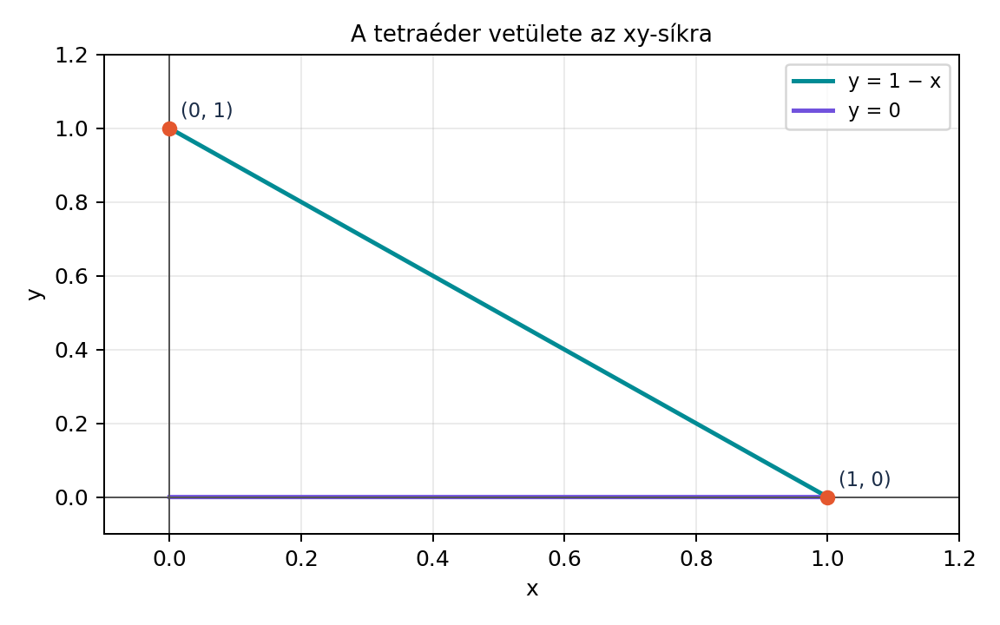

A kettős integrállal síkbeli tartományok területét, tömegét és más
mennyiségeit számítottuk. A gyakorlatban azonban a testek térbeliek: egy
érctelér térfogata, egy tartályban lévő, rétegenként változó sűrűségű
folyadék tömege, vagy egy alkatrész belsejében fellépő
hőmérsékleteloszlás átlaga mind olyan mennyiség, amelyhez a
háromdimenziós tartományon kell integrálni. A hármas integrál ennek az
eszköze: ugyanúgy felosztások és közelítő összegek határértékeként
definiáljuk, ahogy a kettős integrált a Kettős
integrál normáltartományon alfejezetben tettük. A fő új feladat most
a határok felírása: egy térbeli testet úgy kell
leírnunk, hogy a három egymásba ágyazott integrál határai egyértelműek
legyenek.
26.1.2 Szemléletes kép
Egy
téglatestet osszunk fel kis téglatestekre a koordinátatengelyekkel
párhuzamos síkokkal. Ha egy kis téglatest oldalhosszai
,
és
,
akkor a térfogata
Egy
függvény (például sűrűség) integrálját úgy közelítjük, hogy minden kis
téglatestből választunk egy pontot, és a függvényértéket megszorozzuk az
elemi térfogattal. Az ilyen szorzatok összege a hármas
Riemann-összeg. Minél finomabb a felosztás, annál jobban
közelíti az integrált – feltéve, hogy a függvény elég szabályos, például
folytonos.
Az alábbi ábra a későbbi példánkban szereplő
tetraéder xy-síkra vett vetületét, egy háromszöget
mutatja. Erre azért van szükség, mert a hármas integrál határait
általában így írjuk fel: először a z szerinti határokat rögzítjük, majd
a megmaradó síkbeli tartományon kettős integrált számolunk.

A tetraéder vetülete az xy-síkra - Az E
tetraéder xy-síkra vett vetülete a 0 ≤ x ≤ 1, 0 ≤ y ≤ 1 − x háromszög. A
z-határok: 0 ≤ z ≤ 1 − x − y.
Az ábrán a háromszög az
,
és
egyenesek által határolt tartomány. E fölött helyezkedik el a tetraéder
úgy, hogy minden
ponthoz
magasság tartozik.
Az alábbi ábra térben is mutatja ezt: az
pont fölötti függőleges oszlop
-tól
a ferde lapig,
-ig
tart. A másik sorrendben
()
a testet vízszintes síkokkal szeleteljük: a
magasságú metszet az
háromszög, amely
növekedésével zsugorodik (például
-nél
).
Statikus változat (mint a PDF-ben)
A tetraéder függőleges oszlopa (z-határok) és vízszintes
metszetei
26.1.3 Definíciók
Definíció (hármas Riemann-összeg). Legyen
egy zárt téglatest
-ban.
Tekintsünk egy
felosztást, amely a három intervallumot rendre
,
,
illetve
részre osztja. Az így keletkező kis téglatestek száma
,
térfogatuk
,
ahol
.
Legyen
egy tetszőleges pont a
-adik
kis téglatestben. Ekkor az
függvény hármas Riemann-összege
Definíció (hármas integrál téglatesten). Ha a
Riemann-összegek egyértelműen közelítenek egy
valós számot, amikor a felosztás finomsága tart nullához (függetlenül a
pontok választásától), akkor az
függvény hármas integrálja a
téglatesten ez az
szám. Jelölése:
ahol
a felosztás finomsága, vagyis a kis téglatestek legnagyobb átmérője.
A definíció közvetlen számolásra ritkán alkalmas, ezért a kettős
integrálhoz hasonlóan itt is a Fubini-tétel ad
gyakorlati eszközt: a hármas integrált három egyszeres integrál egymásba
ágyazásával számíthatjuk.
Tétel (Fubini-tétel hármas integrálra téglatesten).
Ha
folytonos a
téglatesten, akkor
és az integrálás sorrendje tetszőlegesen megváltoztatható, feltéve,
hogy a határokat megfelelően cseréljük.
Bizonyítási terv. A hármas Riemann-összeget a Kettős integrál téglalapon és a Fubini-tétel
vázlatához hasonlóan előbb a
-indexek
szerint csoportosítjuk; ez adja, hogy
.
A tétel ezután a kettős integrál Fubini-tételéből adódik. Először
rögzítjük
-t,
és a z szerinti integrált tekintjük egy kétváltozós függvénynek:
Behelyettesítve
definícióját kapjuk a hármas integrált. A sorrendcsere ugyanígy működik,
mert a kettős Fubini-tétel bármely két változóra alkalmazható. (A vázlat
vége.)
A gyakorlatban azonban a test ritkán téglatest. A következő definíció
kiterjeszti a hármas integrált általánosabb tartományokra.
Definíció (térbeli normáltartomány). Legyen
zárt, mérhető síkbeli tartomány, és legyenek
folytonos függvények, amelyekre
minden
esetén. Ekkor az
halmazt térbeli normáltartománynak nevezzük.
Szemléletesen: a
síkbeli tartomány minden pontja fölé egy függőleges „oszlopot” állítunk,
amelynek alja a
felület, teteje a
felület. Az
test ezen oszlopok uniója.
Tétel (hármas integrál normáltartományon). Ha
folytonos az
normáltartományon, akkor
Az integrálás sorrendjét itt is megváltoztathatjuk, de a határok
átrendezésekor a tartomány geometriáját figyelembe kell venni.
Bizonyítási terv. A téglatesten igazolt
Fubini-tételt alkalmazzuk úgy, hogy az
függvényt kiterjesztjük egy nagy
téglatestre, amely tartalmazza
-t,
és
halmazon nullának definiáljuk. A kiterjesztett függvény a téglatesten
már integrálható, és a hármas integrál pontosan a fenti formulát adja. A
részleteket a kettős integrál hasonló állításánál már bemutattuk; itt a
z szerinti belső integrál jelenti az új lépést. ∎
Adott egy
test és egy
függvény. A
integrál kiszámításához kövesse az alábbi lépéseket:
Rajzolja le a testet, és határozza meg annak
vetületét az
-síkra.
Ez lesz a
síkbeli tartomány.
Döntse el az integrálási sorrendet. Általában a
legcélszerűbb először
szerint integrálni, mert a függőleges oszlopokban a
-határok
gyakran egyszerűen adódnak.
Határozza meg a z-határokat. Keresse meg azt az
alsó felületet, amelyen a test „alja” nyugszik:
,
és azt a felső felületet, amely a test „teteje”:
.
Minden
pontban
kell teljesüljön.
Írja fel a belső z-integrált. Számítsa ki
-t.
Az eredmény egy kétváltozós függvény lesz.
Írja fel a kettős integrált a D vetületen. Ehhez
alkalmazza a Kettős integrál normáltartományon
alfejezetben tanult módszert:
-t
írja le
-
vagy
-szerinti
normáltartományként.
Integráljon kifelé haladva. Először a belső
-integrált,
majd a középső, végül a külső integrált számítsa ki.
Ellenőrizze az eredményt. Térfogat
()
esetén hasonlítsa össze ismert geometriai képlettel; tömeg esetén
ellenőrizze, hogy a mértékegység
legyen, és a nagyságrend reális-e.
26.1.5 Kidolgozott példák
1. példa (téglatest térfogata). Határozzuk meg az
téglatest térfogatát hármas integrállal.
Itt
.
A vetület
téglalap, a z-határok
és
.
Az integrál:
A belső integrál:
,
a középső:
,
a külső:
.
Az eredmény a jól ismert
térfogat, ami ellenőrzi a módszert.
2. példa (tetraéder térfogata). Legyen
az a tetraéder, amelynek csúcsai
,
,
és
.
Ez a test az első térnyolcadban fekszik, és a
sík határolja.
A vetület az
-síkra
a
,
háromszög (lásd az ábrát). A z-határok:
,
.
A térfogat:
A belső integrál:
Középső integrál:
Végül:
Ellenőrzésképpen: a tetraéder alaplapja az xy-síkban egy
területű derékszögű háromszög, magassága 1, így térfogata
.
Az integrál eredménye megegyezik a geometriai képlettel.
3. példa (tömeg változó sűrűséggel). Legyen
ugyanaz a tetraéder, de most a sűrűség
(például
egységekben). A tömeg:
A belső integrál:
Középső:
Végül:
Az eredmény
tömegegység. Figyeljük meg: a sűrűség nem konstans, ezért a tömeget nem
kaphatjuk meg a térfogat és egy „szemre” választott sűrűségérték
(például a tartomány közepén vett érték) szorzataként; az átlagos
sűrűséget
()
éppen az integrál adja meg.
26.1.6 Ellenpélda: amikor a test
nem egyetlen normáltartomány
Nem minden test írható le kényelmesen egyetlen
alakú normáltartományként. Például vegyünk egy testet, amely két,
egymástól függetlenül álló téglatestből áll:
és
.
A vetület az xy-síkban két diszjunkt téglalap, tehát a
tartomány nem írható le egyetlen intervallumpárként. Ilyenkor a testet
részekre bontjuk, és az integrált az egyes normáltartományokon külön
számítjuk:
A normáltartomány fogalma tehát rugalmas: bonyolult testeket
több normáltartomány uniójaként kezelhetünk.
26.1.7 Valós életbeli alkalmazás:
ásványi telér tömege változó sűrűséggel
Egy hegyvidéki bányában egy ásványi telér (érctelér) alakját
közelítsük egy olyan tetraéderrel, amelynek csúcsai
,
,
és
(a koordinátatengelyek menti élei
m hosszúak). A koordinátákat méterben mérjük. A telér anyagának sűrűsége
nem állandó. Modellünkben a sűrűség
ahol
a vízszintes távolság az egyik saroktól méterben. (A
tag azt modellezi, hogy a telér egyik oldalán dúsabb az érc, így nagyobb
a sűrűség.) Határozzuk meg a telér teljes tömegét.
A tömeg a sűrűség hármas integrálja a
tetraéderen:
Az első tag a térfogat
(
m³) és a konstans sűrűség szorzata:
A második tagot a 3. példában már kiszámítottuk:
m⁴, tehát
A teljes tömeg:
Értelmezés: a telér térfogata
m³, átlagos sűrűsége tehát
Ez egy könnyű üledékes kőzet nagyságrendje; a számadatok szemléltető
modellértékek. A modell korlátja, hogy a tetraéder alak és a lineáris
sűrűségváltozás csak durva közelítés; a valós telér határai
szabálytalanok, és a sűrűségeloszlás mérése is bizonytalan. A hármas
integrál azonban megmutatja a módszer erejét: ha ismerjük a test alakját
és a sűrűségfüggvényt, a tömeg egzaktul számolható.
26.1.8 Tipikus hibák
A z-határokat konstansnak veszik, amikor függvénynek
kellene lenniük.
A tetraéder esetén sokan
és
közötti integrált írnak fel, pedig a felső határ
,
hiszen a test teteje ferde sík. A konstans határ téglatestet írna le,
nem tetraédert.
A vetület határainak hibás megadása.
A
,
háromszögön belül a belső
határának
és
között kell mozognia, nem
és
között. Ha valaki
-t
-tól
-ig
integrálja, akkor egy négyzet fölötti testet kap, ami geometriailag
téves.
Az integrálási sorrend felcserélésekor a határokat nem
igazítja.
Például ha először
szerint akarunk integrálni, akkor a vetület leírását is át kell írni: az
határai
és
lesznek, és a külső
határai
és
.
A sorrendcsere csak a határok együttes megváltoztatásával
érvényes.
A
elhagyása vagy rossz mértékegysége.
A
tényező mértékegysége
,
ezért tömegszámításnál a sűrűség
()
és a térfogatelem szorzata ad
-ot.
Ha a mértékegység nem stimmel, a felírás hibás.
26.1.9 Önellenőrzés
Igaz-e, hogy ha
folytonos a
egységkockán, akkor
?
Írja fel a z-határokat ahhoz a testhez, amelyet a
sík és a
paraboloid határol.
Milyen geometriai jelentése van a
integrálnak?
Adott az
tetraéder
,
.
Írja fel az
tetraéder térfogatát
sorrendű iterált integrálként (a legkülső változó
).
Mik a határok?
Igaz-e, hogy minden háromdimenziós test leírható egyetlen
normáltartományként?
Válaszok az alfejezet végén a Megoldások részben.
26.1.10 Feladatok
1. feladat (A). Számítsa ki az
téglatest térfogatát hármas integrállal, majd ellenőrizze a geometriai
képlettel.
2. feladat (A). Írja fel az integrál határait
(anélkül, hogy kiszámolná) az
testre, amelyet a
paraboloid és a
sík határol. A vetületet az xy-síkon adja meg.
3. feladat (B). Számítsa ki az
tetraéder térfogatát, ahol a csúcsok
,
,
és
.
Ellenőrizze a geometriai képlettel.
4. feladat (B). Határozza meg annak a testnek a
tömegét, amelyet az
,
,
és
síkok határolnak, ha a sűrűség
.
5. feladat (C). Legyen
folytonos a
téglatesten. Bizonyítsa be, hogy
6. feladat (D). Egy tartály alakja az
,
,
,
tetraéder (koordináták méterben). A benne lévő folyadék sűrűsége
.
Számítsa ki a folyadék tömegét, és adja meg az átlagos sűrűséget.
26.1.11 Megoldások
Önellenőrzés – válaszok
Igen, mert a Fubini-tétel szerint a sorrend tetszőlegesen
megváltoztatható.
A z-határok:
,
,
feltéve, hogy
a
körön belül van.
A
az
test térfogata.
:
,
,
;
értéke
.
Nem; a diszjunkt testeket több normáltartományra kell bontani (lásd
az ellenpéldát).
1. feladat megoldása.
Az integrál:
A téglatest oldalai:
,
,
,
tehát
.
Az eredmény helyes.
2. feladat megoldása.
A paraboloid és a sík metszete:
,
tehát a vetület
.
Minden
pontban a z-határok:
(alul) és
(felül). Így
A kettős integrált derékszögű koordinátákban tovább írva a kör miatt
bonyolult határokat kapunk:
,
.
Ez a feladat előrevetíti, hogy a kör alakú tartományokon a
hengerkoordináták (Henger- és gömbkoordináták)
sokkal egyszerűbbé teszik a számolást.
3. feladat megoldása.
A tetraéder hasonló az 1. példához, csak az élek hossza 2. A sík
egyenlete:
.
Az integrál:
4. feladat megoldása.
A sűrűség
,
a test az
,
tetraéder. A tömeg:
Belső:
Egyszerűbb a linearitást használni:
Az első
.
A másodikhoz:
Belső:
.
Középső:
Helyettesítsünk
,
,
határok:
,
,
tehát
Külső:
Legyen
,
,
határok:
,
:
Tehát
.
A tömeg:
A mértékegység: ha a koordináták méterben és a sűrűség
-ben
adott, akkor
.
5. feladat megoldása.
Fubini-tétel szerint:
Mivel
nem függ
-tól
és
-től,
kiemelhető a belső integrálok elé; hasonlóan
és
is. Így:
Ezt használjuk később bizonyos többdimenziós integrálok gyors
kiszámítására.
6. feladat megoldása.
A tartály az
,
tetraéder. A sűrűség
.
A tömeg:
A tetraéder térfogata (a 3. feladat szerint, 2 éllel)
m³. Tehát az első tag:
A második taghoz a 4. feladatban kiszámoltuk, hogy az egységnyi élű
tetraéderre
.
A 2 méter élű tetraéderre a skálázás miatt
értéke
-szeres,
mert a
változó is méterben van, és a térfogatelem
méter³-ben. Pontosabban: végezzük el a
helyettesítést, ahol
az egységtetraéder koordinátái. Ekkor
,
,
így
Így a második tag:
Teljes tömeg:
Az átlagos sűrűség:
Ez reális folyadéksűrűség (kissé sűrűbb a víznél).
26.1.12 Rövid összefoglaló
A hármas integrál a háromdimenziós tartományon vett függvény
integrálja, amelyet a hármas Riemann-összegek határértékeként
definiálunk. Téglatesten a Fubini-tétel szerint a hármas integrál három
egyszeres integrál egymásba ágyazásával számolható, és a sorrend
tetszőlegesen cserélhető. Térbeli normáltartománynak nevezzük az
alakú testet, ahol
az
-síkra
vett vetület. Ekkor
A határok felírásakor először a test vetületét keressük meg, majd a
z-határokat az alsó és felső felületek adják. Ha a test nem egyetlen
normáltartomány, részekre kell bontani.